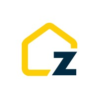
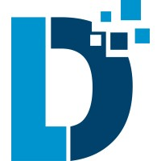
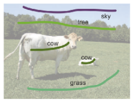

Armen Jeddi
I'm a serial entrepreneur, and an AI/Deep Learning engineer. Currently, I'm a Founder In Residence at Antler Canada.
I have an M.Sc. in computer science from the University of Waterloo,
where I worked on deep learning models for computer vision tasks such as
image segmentation, adversarial robustness, detection.
Prior to Waterloo, I did an Undergrad in Sharif University of Technology from 2014-2018.
Since 2020, I have been working across different industries and companies like Huawei, MARZ VFX, Deeplite (Acquired by Sony).
I have also founded two startups, Bluefox Immigration, which provides analytical tools to immigration consultants, and Zown Realty, which helps make real estate more affordable.
ü뮂Äçüíª Work Experiences
I've been fortunate to work in vast set of industries in Canada and hone my AI & Product development skills to solve a wide range of probelms. From day to day use cases such as real estate, recruitment & Staffing, immigration, and graphical visual effects to more deep tech technologies such as autonomous driving & Perception, gesture recognition powered interactive devices, and deep tech tools to optimize neural networks & generative models for edge & cloud.
|
|
Founder In Residence March 2024 - Present Toronto, Ontario, Canada Working on building the next big B2B platform. |
|

|
Co-Founder & Head of AI May 2023 - January 2024 Toronto, Ontario, Canada Built the best AVM system in the market with an error rate of less than 5% for residential property pricing. Applied advanced analytics to gain insights into the behavior of buyers and sellers in the Canadian market. Built GenAI pipelines with ControlNet and LLMs to provide renovation and staging recommendations to sellers. |
|

|
Senior Deep Learning Engineer January 2022 - August 2023 Toronto, Ontario, Canada
Built end-to-end computer vision solutions for a variety of clients, designing the
architecture, data gathering and cleaning, training the deep models, and deploying them on the custom hardware
with latency-accuracy tradeoff benchmarkings and optimizations. |
|
|
Applied Machine Learning Scientist Nov 2021 - December 2021 Toronto, Ontario, Canada Implemented a lip-sync pipeline that would sync the facial expressions of an actor with a given audio that would by used in dubbing movies. The pipeline includes audio embedding for the given audio and face alignment, keypoint detection, 3D face reconstruction, and an image-to-image model for the given video. |

|
Computer Vision Engineer September 2020 - October 2021 Toronto, Ontario, Canada As a member for the Human Machine Interaction Lab, I did research on gesture recognition pipelines that included hand detection, tracking, and finally gesture classification, that would translate into actions on devices such as smart TVs and vehicles. Dealing with Out-Of-Distribution (OOD) data and data cleaning and augmentation techniques, as well as deploying high-performance highly-efficient models that can run in real-time are the technical challenges I worked on. |
|
|
Co-Founder & CTO May 2020 - December 2021 Toronto, Ontario, Canada We built a platform that connects future Canadian immigrants and international students to licensed immigration consultants and helps them with automating their documentation and processes. |
|
|
Graduate Research Assistant January 2019 - August 2020 Waterloo, Ontario, Canada As a member of VIP lab, I did research on computer vision models in image segmentation, weak-supervision, transfer & representation learning, and adversarial robustness. I published four papers with the help of my supervisors, and my research was supported by Continental AG and Microsoft. |
üìú Research & Publications
I'm interested in computer vision, deep learning, generative AI, and image processing. Most of my publications have been in computer vision; however, I am also interested in the applications of these technologies in healthcare, social good, and I actively look for ways to start innovative startups that can help our society get more efficient with its resources.
|
|
Learn2Perturb: an End-to-end Feature Perturbation Learning to Improve Adversarial Robustness CVPR 2020 (Main)
TL;DR
Added noise to neural networks during training can help the adversarial robustness, however, if the noise
parameters are static, then the effects will not be significant. We devise a way that noise parameters can be trained in conjuction
with the network parameters in the adversarial training process.
|
|
|
A Simple Fine-tuning Is All You Need: Towards Robust Deep Learning Via Adversarial Fine-tuning Distinguished Paper in CVPR 2021, Workshop on Adversarial Machine Learning in Real-World Computer Vision Systems and Online Challenges (AML-CV)
TL;DR
The usual approach for adversarial training is to train a neural network from scratch by using adversarial training.
However, in many cases the process may not converge or it might take 20 times more resources than training the regular model.
We find out that there is actually no need to train the models from scratch, but, we can just train the models as regular and adversarially finetune them.
The only thing we need is some tricks with the training process, that involves a warmup and then quick drop in learning rate.
|
|
|
Deep Neural Network Perception Models and Robust Autonomous Driving Systems: Practical Solutions for Mitigation and Improvement IEEE Signal Processing Magazine
TL;DR
An study on the threat of adversarial attacks and the important of adversarial robustness in real-world applications such as autonomous driving.
|
|

|
Tackling the Problem of Limited Data and Annotations in Semantic Segmentation arXiv
TL;DR
In many cases, for a task such as image segmentation, there are not enough annotated data.
One solution is to use weak annotations, that could be as small as just a few dots on the image. In this work, we combine this approach
with the transfer learning from huge models and see these two techniques work well together.
|
üéì Education
|
|
Master of Mathematics (MMath) January 2019 - August 2020 Waterloo, Ontario, Canada Supervisors: Alexander Wong, Mohammad Javad Shafiee GTA: 98 / 100 Notable Courses: Advanced Topics in Computer Vision, Pattern Recognition, Optimization in Data Science, Distributed Data Processing |
|
|
Bachelor of Science, Software Engineering September 2014 - August 2018 Tehran, Iran GTA: 17.68 / 20 Notable Courses: Introduction to Artificial Intelligence, Stochastic Processes and Advanced Statistical Analysis, Data Mining, Modern Information Retrieval, Introduction to Big Data, Object Oriented Software Design |
ü•∑ Miscellaneous
The things that I like to do other than starting to cool startups include traveling, latin dancing, running and doing races, playing santoor, enjoying Toronto, trails and cuisines with my friends and family.
With My Pet Bunny, Coco, May 2023
UWaterloo Convocation with My Fam, June 2022
Waterloo 5K Foam Fest, August 2022
Europe Trip, June 2023
Toronto Marathon, May 2023
Qashqai Rug Completely Made by My Mom, September 2023
Spartan Race, May 2023
üèÖ Awards & Honors
|